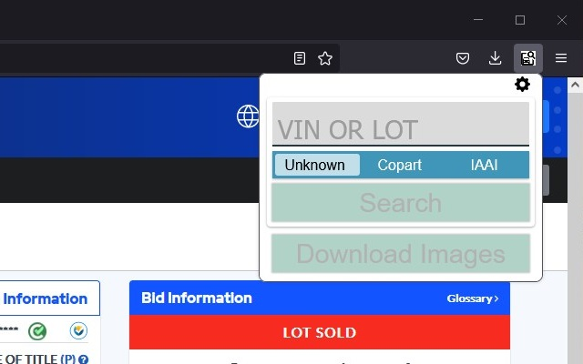

Salvage Search is a browser plugin that makes it easy to search inventory websites for vehicles and download high-def images. Select your browser below to install it.
This plugin adds an extension to your toolbar, and should be fairly self-explanatory:
Type a VIN in the text box to enable the SEARCH button. Search result tabs will open all at once. IAAI's website has decided it no longer searches by VIN, but maybe that will change in the future.
A future update will improve the performance of the search function (salvage websites are constantly changing). Future updates will also add additional salvage yards and a preferences page to allow you to pick which yards are in your area.
The second button, the DOWNLOAD IMAGES button, only enables on Copart and IAAI listing pages. The button won't enable on a search results page!
Copart loads very quickly, but IAAI will take a little longer, and a progress bar will be displayed. If you click away from the popup while downloading IAAI images, the download will be canceled.
I'll freely admit I coded this in a weekend, and sometimes it might not work. If that happens, try refreshing the page and giving it another go. If it still doesn't work, send me the listing page you're trying to download from and I'll see what I can do.
IAAI also provides panoramic interior photos and exterior walkarounds. They won't be downloaded by this extension, but a future update should include them.